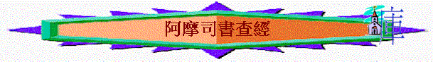

[ Home ] [ 經卷課程 ] [ 查經資料 ] [ 栽培課程 ] [ 事奉培訓 ] [ 聚會資源 ] [ 佈道資源 ] [ 胸懷普世 ] [ 異端異教 ] [ 信息分享 ] [ 專題研究 ] [ 祈禱專題 ] [ 詩歌簡譜 ] [ 動畫之廊 ] [ 輔導關懷 ] [ 站長聯絡 ]
阿摩司書查經組長指引 阿摩司書緒論與背景 1三番四次的得罪神 2有因必有果的追討 3當預備見神的呼籲 4錯誤觀念下的糾正 5在神警告下的回應 6神公義憐憫的彰顯